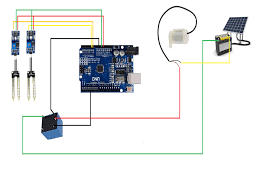

In the world of agriculture, the efficient use of water resources has always been a
priority. With climate change and rising water scarcity, farmers are increasingly adopting automatic water
irrigation systems to optimize water usage, boost crop yield, and reduce labor. These systems, equipped with
sensors and controllers, enable the precise distribution of water according to plant needs, ensuring that no
water is wasted.
By automating irrigation, farmers can focus on other critical tasks, monitor water usage remotely, and ensure
their crops get just the right amount of moisture. This modern approach is transforming agricultural practices,
making them more sustainable and productive.

Arduino Board
Arduino UNO or any compatible model. This acts as the central controller for the
system.
Soil Moisture Sensors
These sensors measure the moisture content of the soil and send readings to the
Arduino.
Water Pump
A 5V or 12V submersible water pump is often used to draw water and distribute it to
the plants.
Our Services
Automated Irrigation System Design
Our expert team specializes in custom-designed automated irrigation systems tailored
to your specific agricultural or gardening needs. We assess your land, water sources, and crop types to create
a personalized system that maximizes water efficiency and ensures optimal crop health. Whether it’s for a home
garden or large commercial farms, our design approach is aimed at providing sustainable and intelligent water
management.
Installation and Setup
We offer professional installation and setup services for all types of automated
irrigation systems. From placing moisture sensors and water pumps to configuring control units like Arduino or
commercial systems, we ensure that every component is properly installed. Our team will guide you through the
setup process, ensuring your system is fully functional and easy to manage from day one.
Maintenance and Support
We offer comprehensive maintenance and support services to keep your irrigation
system running smoothly year-round. This includes routine checkups, cleaning, and repairs, as well as
technical support for any issues that arise. Our team is always available to troubleshoot and maintain your
system, extending its lifespan and ensuring optimal performance.
Smart Integration and Upgrades
Upgrade your irrigation system with smart integration features, such as remote
access, weather-based scheduling, and IoT functionality. We provide advanced upgrades for existing systems,
allowing you to control and monitor your irrigation setup from anywhere through mobile apps. Our solutions
keep your system in line with the latest technology trends, enhancing efficiency and convenience.
Join AWAS Community
Sign Up Today
Automatic Water Agri System
how does automatic water irrigation system help in our daily lives?
An automatic water irrigation system can significantly enhance daily
life like saves time and effort
Insights the implementation of automated water
irrigation systems yields substantial advantages for the
community by encouraging water conservation, enhancing agricultural output, and minimizing workforce demands. In
areas where water is scarce, these systems help to preserve water, cut down on waste, and promote sustainable
farming practices by accurately administering water based on current soil moisture levels.